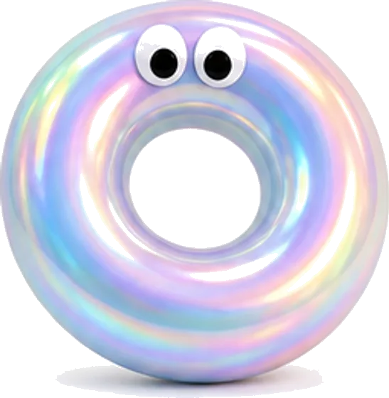

PRODUCT(商品)
商品一覧
上塗りの AOTO UPPER と、
下地をつくる AOTO UNDER。
現場でよく使う6製品です。
- トップ
- 商品一覧
AOTO UPPER上塗り塗料
外壁と屋根の、いちばん外側に塗る仕上げの塗料です。色と艶、汚れにくさを受け持ちます。
AOTO UPPER シリーズ
SOTOKABE TOP
（ソトカベトップ）
水性シリコン系外壁用上塗り塗料
雨すじが残りにくく、藻やカビが付きにくい外壁用の上塗りです。水性なので臭いが少なく、住みながらの塗り替えにも向いています。ローラーでよく伸び、継ぎ目の跡が目立ちにくい粘りに調整しました。
- 樹脂
- 水性シリコン樹脂系
- 主な用途
- 戸建て住宅・集合住宅・店舗の外壁
- 適用下地
- モルタル、窯業系サイディング、コンクリート、ALC（いずれも下塗り後）
- 工程の例
- 下塗り1回 ＋ 上塗り2回
- 荷姿
- 15kg缶 ／ 4kg缶
- 色
- 標準色40色 ＋ 調色（翌日出荷）
この製品の仕様書を依頼する
AOTO UPPER シリーズ
YANE TOP
（ヤネトップ）
遮熱型フッ素系屋根用上塗り塗料
日射を跳ね返しやすい顔料を使った屋根用の上塗りです。夏場の屋根面の温度上昇をおさえ、小屋裏の暑さをやわらげます。フッ素樹脂で色あせしにくく、塗り替えまでの間隔を長くとれます。遮熱の効き方は、屋根の色や形、断熱の有無によって変わります。
- 樹脂
- 弱溶剤形フッ素樹脂系（2液形）
- 主な用途
- 住宅・倉庫・工場の屋根
- 適用下地
- 化粧スレート、金属屋根（それぞれ専用の下塗り後）
- 工程の例
- 下塗り1〜2回 ＋ 上塗り2回
- 荷姿
- 15kgセット（主剤・硬化剤）
- 色
- 遮熱標準色16色
この製品の仕様書を依頼する
AOTO UNDER下塗り塗料
下地と上塗りをつなぐ塗料です。どんなに良い上塗りも、下塗りが合っていなければ長く持ちません。
AOTO UNDER シリーズ
CATION BASE
（カチオンベース）
カチオン形エマルション系下塗り材
傷んでもろくなった下地にしみ込み、上塗りとの密着をつなぐ水性の下塗り材です。モルタル、コンクリート、サイディングと幅広い下地に使えるので、現場に持っていく缶の種類を減らせます。
- 種類
- カチオン形エマルション系（水性）
- 主な用途
- 外壁の塗り替え時の下塗り
- 適用下地
- モルタル、コンクリート、窯業系サイディング、既存の塗膜
- 工程の例
- 下塗り1回（吸い込みが強い場合は2回）
- 荷姿
- 15kg缶
- 色
- 透明 ／ 白
この製品の仕様書を依頼する
AOTO UNDER シリーズ
RUST BASE
（サビ止めベース）
2液速乾弱溶剤形変性エポキシ系サビ止め塗料
鉄部、亜鉛めっき面、アルミ、ステンレスと、いろいろな金属面に一缶で使えるサビ止めです。乾きが早いので、気温などの条件が合えば同じ日のうちに上塗りまで進められます。
- 種類
- 弱溶剤形変性エポキシ樹脂系（2液形）
- 主な用途
- 鉄骨、手すり、シャッター、金属屋根などの下塗り
- 適用下地
- 鉄、亜鉛めっき、アルミ、ステンレス
- 工程の例
- 素地調整 ＋ 下塗り1〜2回
- 荷姿
- 16kgセット（主剤・硬化剤）
- 色
- 白 ／ グレー ／ 赤さび
この製品の仕様書を依頼する
AOTO UNDER中塗り・下地調整
ひび割れや凹凸を整えて、上塗りの仕上がりを平らにする塗料です。
AOTO UNDER シリーズ
SURFACER BASE
（サーフェーサーベース）
1液水性シリコン樹脂サーフェーサー
細かな凹凸やひび割れを埋めて、上塗りの下地を平らに整える中塗り材です。厚く塗れて、1液なので混ぜる手間がありません。模様を残したいときは、ローラーの種類で風合いを変えられます。
- 種類
- 水性シリコン樹脂系（1液形）
- 主な用途
- 外壁の下地調整・中塗り
- 適用下地
- モルタル、コンクリート、既存の塗膜（下塗り後）
- 工程の例
- 下塗り1回 ＋ 本品1回 ＋ 上塗り2回
- 荷姿
- 16kg缶
- 色
- 白（上塗り色に合わせた調色も可）
この製品の仕様書を依頼する

外壁の動きに合わせて、フィラーが伸縮。
AOTO UNDER シリーズ
FILLER BASE
（フィラーベース）
可とう形改修塗材E
伸び縮みする微弾性のフィラーです。外壁の小さな動きについていき、ヘアクラックの目止めと下地調整を1回の工程で済ませられます。モルタル外壁の塗り替えで、いちばん出番の多い製品です。
- 種類
- 可とう形改修塗材E（微弾性フィラー）
- 主な用途
- モルタル外壁の塗り替え時の下塗り・下地調整
- 適用下地
- モルタル、コンクリート、既存の塗膜
- 工程の例
- 本品1回 ＋ 上塗り2回
- 荷姿
- 15kg缶
- 色
- 白
この製品の仕様書を依頼する
掲載している工程は一例です。下地の状態や既存の塗膜によって、使う製品と回数は変わります。現場ごとの仕様は、仕様書の作成をご利用ください。製品の安全データシート（SDS）はお問い合わせからご請求いただけます。
CONTACT
製品のこと、現場のこと。
どんな小さなことでもお聞きします。
お問い合わせ